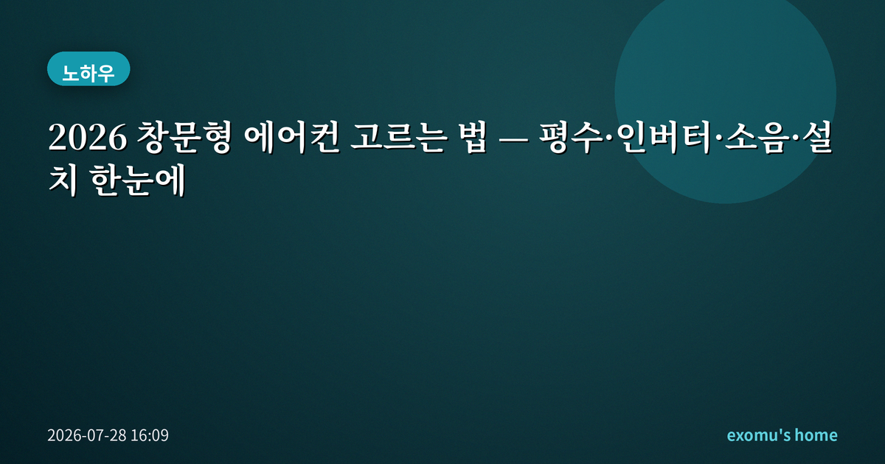
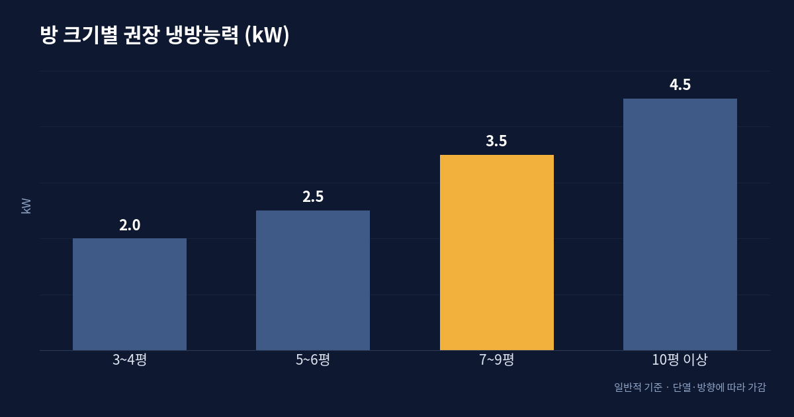
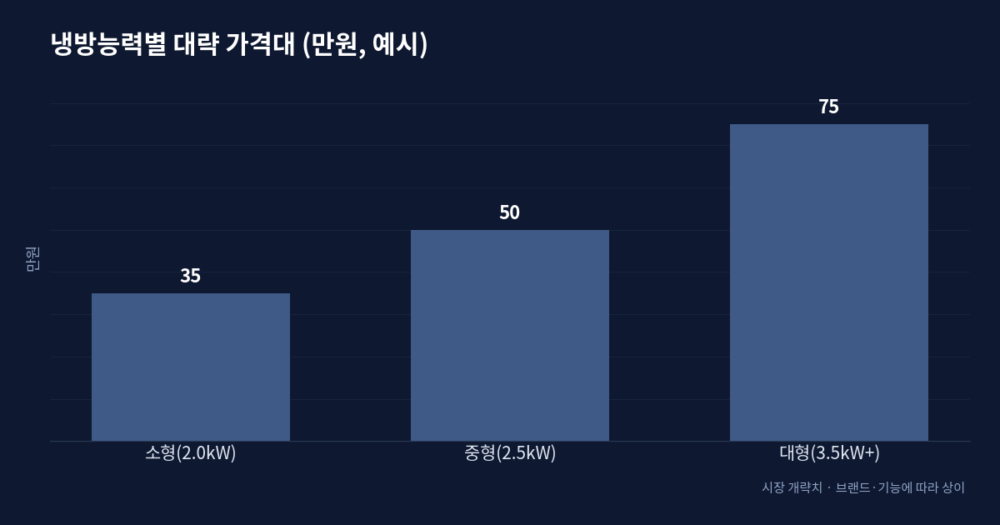
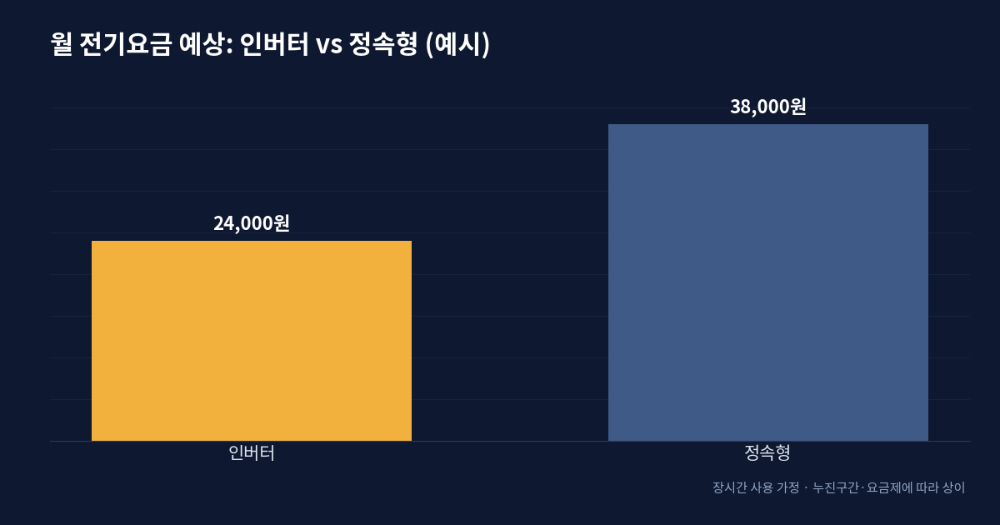
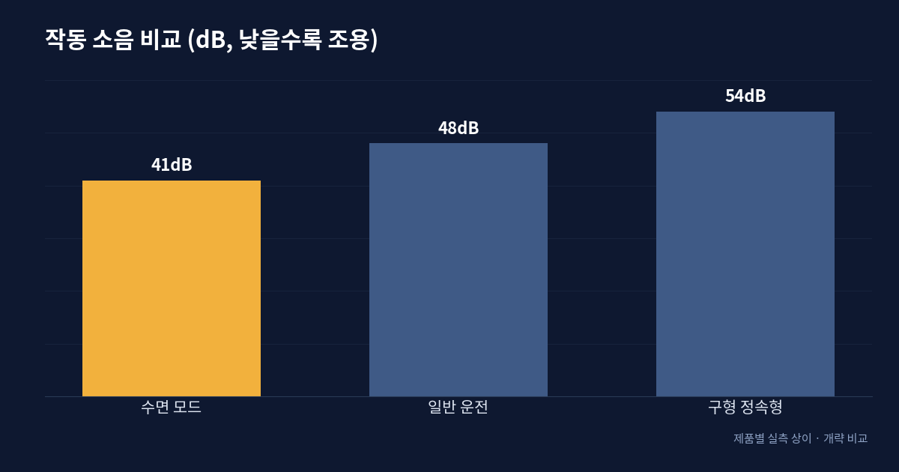

2026 창문형 에어컨 고르는 법 — 평수·인버터·소음·설치 한눈에

창문형 에어컨, 누구에게 맞나
창문형 에어컨은 실외기와 실내기가 하나로 합쳐진 일체형이다. 벽을 뚫는 배관 공사 없이 창틀에 거치대만 대면 설치가 끝나기 때문에, 전세·월세라 벽 타공이 부담스러운 집, 방 한 칸만 시원하면 되는 1인 가구, 벽걸이가 닿지 않는 작은 방의 추가 냉방에 특히 잘 맞는다. 반대로 넓은 거실 전체를 식히거나 여러 방을 동시에 쓰는 집이라면 스탠드형·시스템 에어컨이 더 효율적이다.
최근 몇 년 사이 창문형은 소음과 효율이 눈에 띄게 개선되면서 '임시방편'이라는 인상에서 많이 벗어났다. 인버터가 기본으로 들어간 모델이 늘었고, 자가 설치를 돕는 전용 키트도 보편화됐다. 그만큼 선택지가 많아졌으니, 가격만 보고 고르기보다 아래 네 가지 축—용량, 압축기 방식, 소음, 설치 조건—을 순서대로 따져보는 것이 후회를 줄이는 길이다.

평수별 냉방능력 고르기
가장 먼저 볼 숫자는 냉방능력(정격, 보통 W 또는 kW로 표기)이다. 방보다 지나치게 큰 제품은 전기와 돈 낭비, 지나치게 작으면 아무리 돌려도 시원하지 않다. 대략의 기준은 이렇다. 3~4평 정도의 작은 방이면 2.0kW 안팎, 5~6평이면 2.5kW 안팎, 7~9평 정도의 방이면 3.5kW 이상을 본다. 단열이 나쁜 최상층·서향 방, 창이 크고 햇빛이 강한 방은 한 단계 넉넉하게 잡는 편이 낫다.

인버터 vs 정속형 — 전기요금
같은 냉방능력이라도 압축기 방식에 따라 전기요금이 갈린다. 정속형(정속 압축기)은 켜지면 최대로 돌고 설정 온도에 닿으면 꺼지는 식이라 껐다 켜기를 반복한다. 인버터형은 목표 온도에 가까워지면 출력을 낮춰 은근하게 유지하므로, 오래 켜둘수록 전기 소모가 줄어든다. 하루 몇 시간만 잠깐 쓰는 사람이라면 초기 가격이 싼 정속형도 나쁘지 않지만, 열대야에 밤새 틀어두는 사용 패턴이라면 인버터의 절감폭이 분명하다.
전기요금은 사용 시간뿐 아니라 우리나라의 누진 구조와도 얽혀 있다. 여름철 냉방을 오래 쓰면 구간이 올라가 단가가 뛰기 때문에, 오래 켜둘수록 인버터의 소비전력 차이가 요금에서 더 크게 벌어진다. 에너지소비효율 등급표에 적힌 월간 소비전력량을 제품끼리 비교해 보면, 초기 가격 차이가 몇 년의 요금 차이로 어떻게 상쇄되는지 대략 가늠할 수 있다.

소음·설치·배수 체크
창문형은 압축기가 실내 쪽에 함께 있어 소음이 신경 쓰이는 지점이다. 취침용으로 쓴다면 저소음·수면 모드의 실측 소음(대략 40dB 초반이면 조용한 편)을 확인하는 게 좋다. 설치는 대체로 창틀 규격에 맞는 전용 거치대와 틈새 패널로 마감하는데, 미닫이 창 방향과 창 높이가 제품 규격에 맞는지 주문 전에 재봐야 한다. 요즘 제품은 응축수를 내부에서 증발시켜 배수 호스가 필요 없는 모델이 많지만, 습도가 높은 날 물이 고이는 구조인지도 함께 확인하자.

구매 전 최종 점검
정리하면 순서는 이렇다. 첫째, 방 평수와 방향으로 필요한 냉방능력을 정한다. 둘째, 사용 시간이 길면 인버터, 짧고 간헐적이면 정속형을 저울질한다. 셋째, 창틀 규격과 거치대 호환, 취침 소음, 배수 방식을 확인한다. 넷째, 에너지소비효율 등급과 실사용자들이 말하는 실측 소음·냉방 체감을 교차로 살핀다.
마지막으로 놓치기 쉬운 두 가지를 덧붙인다. 하나는 겨울철 보관과 방한이다. 창문형은 겨울에 창을 통해 찬 바람이 새지 않도록 탈거하거나 커버로 막는 계획까지 세워두는 편이 좋다. 다른 하나는 소비전력에 맞는 콘센트다. 정격 소비전력이 큰 모델은 멀티탭이 아니라 벽면 단독 콘센트에 꽂는 것이 안전하다. 이 자잘한 조건까지 미리 확인하면, 설치 당일 당황할 일이 크게 줄어든다.